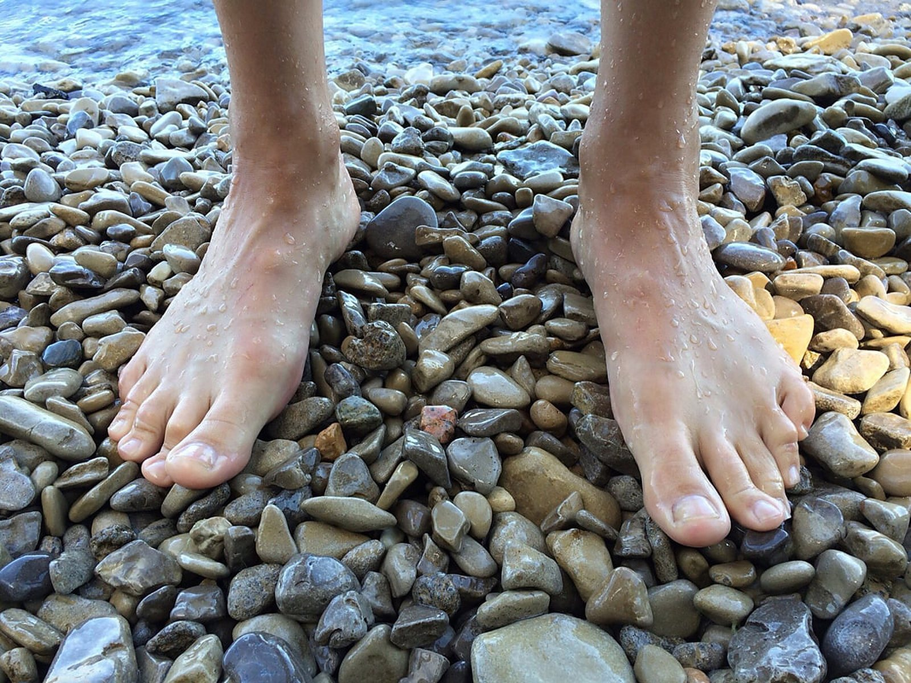
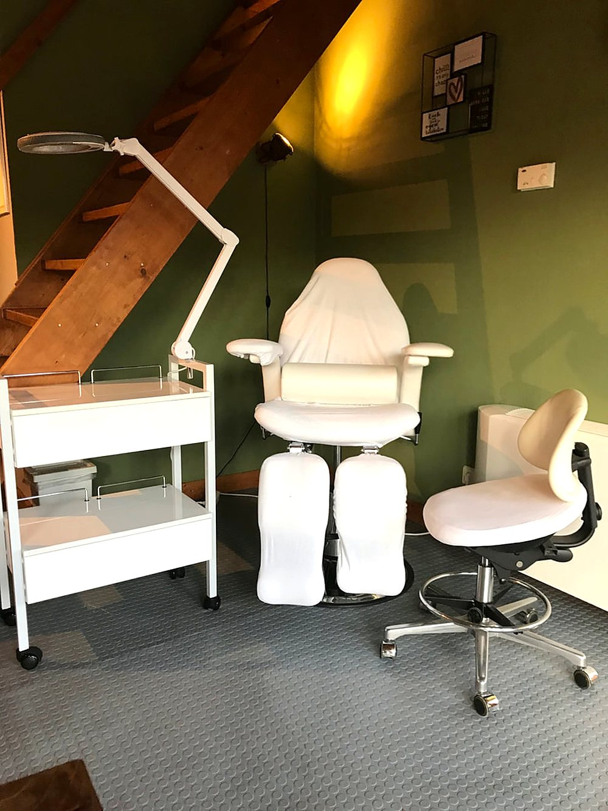
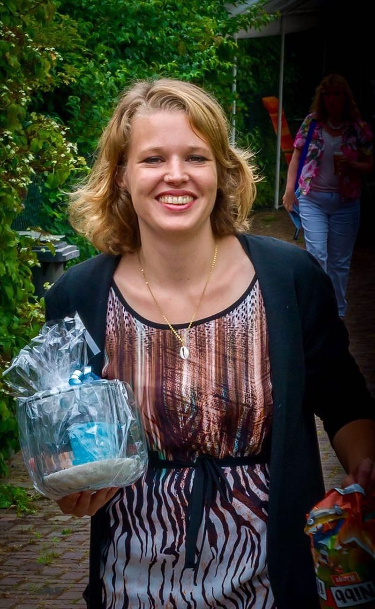

Blijf niet doorlopen met pijnlijke voeten
Medisch pedicure in Wagenberg, voor voetklachten en voor voeten die wat extra aandacht verdienen. In de praktijk in het tuinhuis, of bij u thuis.
Waarvoor kunt u bij mij terecht?
Voor een professionele behandeling van voetklachten. Maar natuurlijk ook om uw voeten eens wat extra aandacht te geven.
Voetklachten
Met mijn medische achtergrond kan ik u ook goed adviseren.
- Nagels knippen
- Verdikte of verkleurde nagelsKalknagels, schimmelnagels, hoornnagels
- Ingroeiende nagels en tunnelnagels
- Eelt, droge huid en kloven
- Likdoorns en eksterogen
- Voetschimmel en zweetvoeten
Mooie, verzorgde voeten
Ik vind het erg leuk om voeten te verfraaien.
- Gellak op de teennagelsPink Gellac, in veel kleuren en lang mooi
- Nagels lakken of french pedicure
- Voetmassage
- VerwenbehandelingVoetenbad, scrub, pakking en massage van voeten en onderbenen
- VoetverzorgingsproductenEen ruim assortiment om thuis mee verder te gaan
Tarieven
Een volledige pedicurebehandeling duurt ongeveer 30 tot 45 minuten.
U kunt contant of met pin betalen.
Ook bij u thuis
Kunt u niet naar de praktijk komen? Dan kom ik naar u toe en behandel ik u gewoon thuis.

Een rustige praktijk in het tuinhuis
De praktijkruimte is ingericht in het tuinhuis achter ons huis, aan de hoofdweg door Wagenberg. Modern en professioneel, en toch gezellig.
Ik werk met een modern freesapparaat met nat-techniek. Vanuit Made, Terheijden en Breda bent u er zo, en u parkeert gewoon op eigen terrein.
- Parkeren op eigen terrein
- Nat-techniek freesapparaat
- Ook behandeling aan huis
- Contant of met pin
Ik werk met deze merken
Footlogix
Professionele voetverzorging met een klinisch bewezen werking. Resultaat merkbaar binnen een paar dagen.
Peclavus
Gecertificeerd natuurlijke producten, ook voor specifieke voetproblemen.
Pink Gellac
Professionele gellak in veel kleuren, die lang mooi blijft.

Ik ben Marleen
"Door mijn ervaring in de gezondheidszorg en brede medische kennis kan ik u goed adviseren bij voetproblemen."
Na verschillende banen in de gezondheidszorg wilde ik iets wat ik beter kon combineren met de zorg voor mijn gezin. In 2018 heb ik de opleiding tot pedicure gedaan en mijn eigen praktijk geopend. In 2020 haalde ik ook mijn diploma medisch pedicure.
Naast het behandelen van voetproblemen, zoals kloven of ingroeiende nagels, maak ik voeten ook graag mooi met een (gel)lak of french pedicure.
Afspraak maken
Bel of stuur een WhatsApp-bericht. Heeft u eerst een vraag? Ook dan hoor ik graag van u.
Footprint pedicure
Pedicurepraktijk van Marleen Sliedrecht